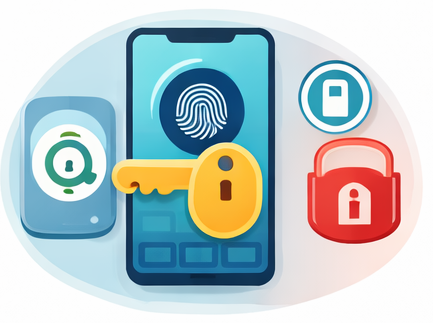

Mobile Security Basics
Part 1: Protecting Devices
Introduction:
Our smartphones carry our entire digital lives. Mobile security involves protecting these portable devices and the personal data they store from threats like theft, malware, and unauthorized access.
Best Practices
- Strong Screen Locks
- Use biometric locks like fingerprints or face recognition.
- Avoid simple patterns or common PINs like 1234.
- Set a short auto-lock timeout for better protection.
- Trusted Apps Only
- Install apps only from official stores like Google Play or Apple App Store.
- Always check app permissions before installation.
- Keep your installed apps updated to the latest versions.
- Public Wi-Fi Safety
- Avoid accessing sensitive accounts on open public networks.
- Use a VPN to encrypt your connection when necessary.

Strengthening mobile security by combining biometric physical scans (the fingerprint) with secure access keys and digital locks for robust device and data protection."